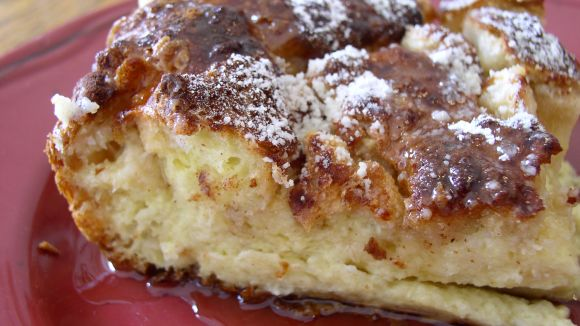

French Toast Souffle

NOTE: This recipe involves letting a dish sit overnight!
Ingredients
- 1/2 cup butter
- 8 oz. cream cheese
- 1/2 cup maple syrup
- 2 loaves cubed French Bread
- 12 eggs
- 3 cups half-and-half
- 1 1/2 tsp. vanilla
- cinnamon
- powdered sugar
Directions
- Coat 2 baking dishes with butter and fill half full with bread cubes.
- In a bowl, mix softened butter, cream cheese, and syrup.
- Spoon mixture over cubes and spread evenly.
- In a bowl, beat eggs, half-and-half, and vanilla.
- Pour egg mixture over bread - make sure all bread cubes are moistened.
- Dust with cinnamon, cover, and store overnight in refrigerator.
- In the morning, bake for 55-60 minutes in a 350°F oven.
- Dust with powdered sugar.
Contact Me
taylor3.miller@umontana.edu
The University of Montana
32 Campus Dr
Missoula, MT 59812
Original Recipe